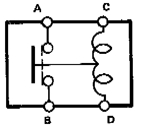
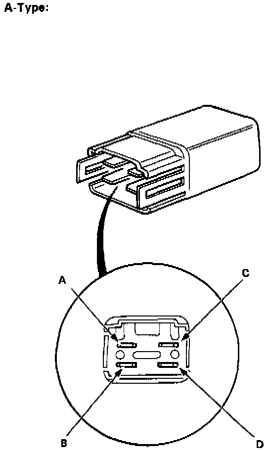
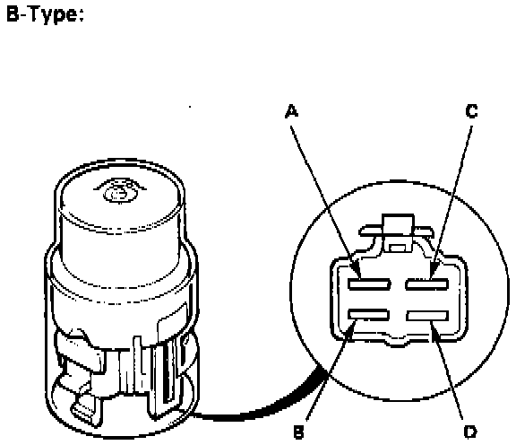
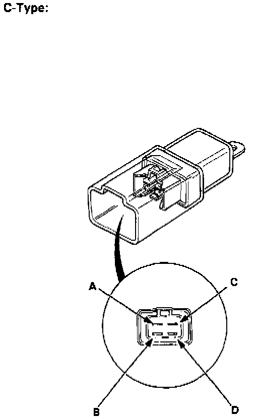

Component Tests and General Diagnostics
RELAY TEST



There should be continuity between the A and B terminals when the battery is connected to the C and D terminals.
There should be no continuity when the battery is disconnected.
NOTE: Test procedure is the same for all relay types shown.